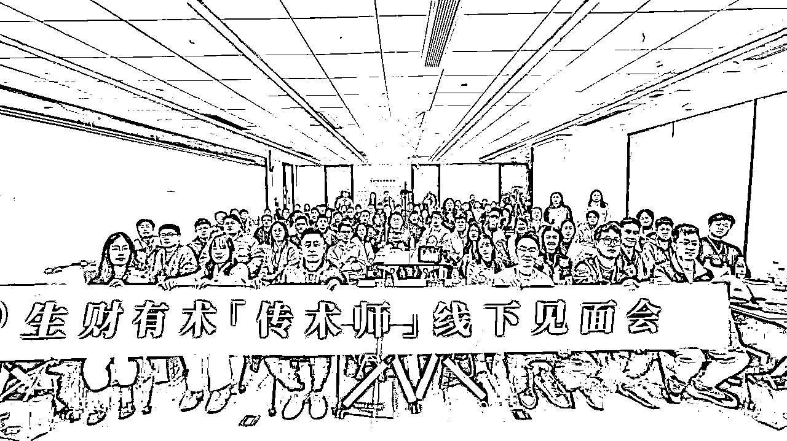
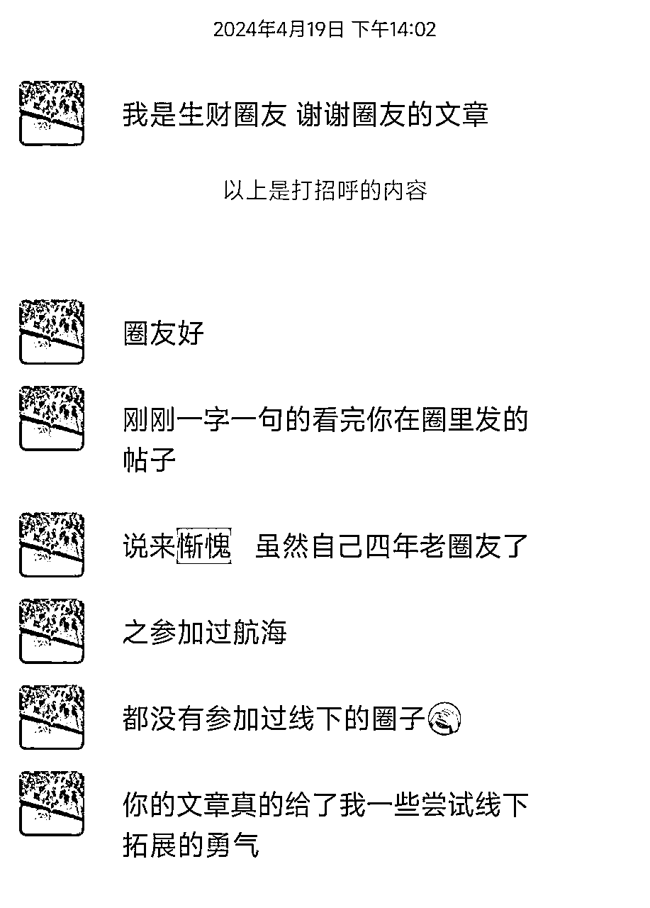
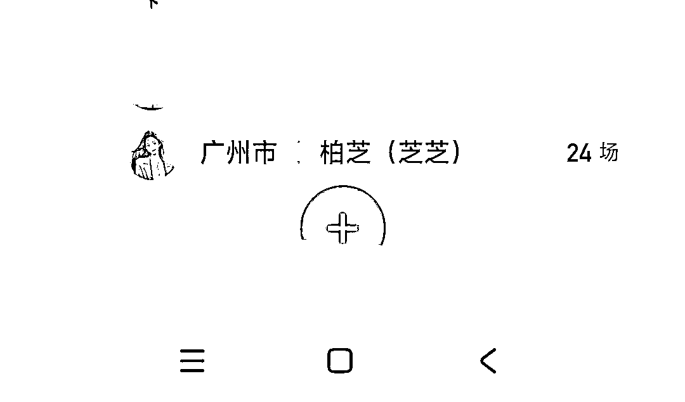
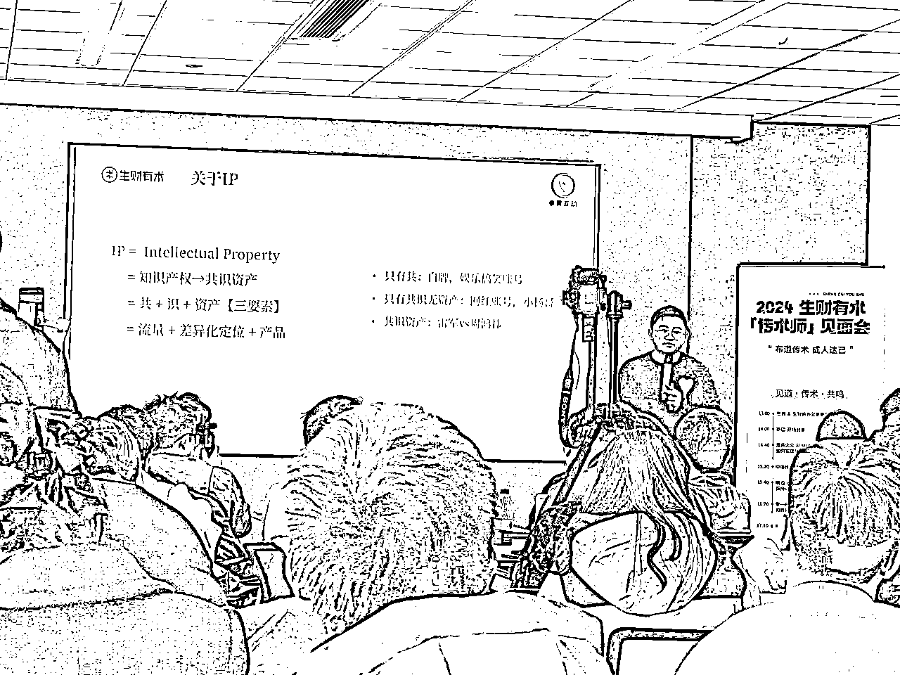
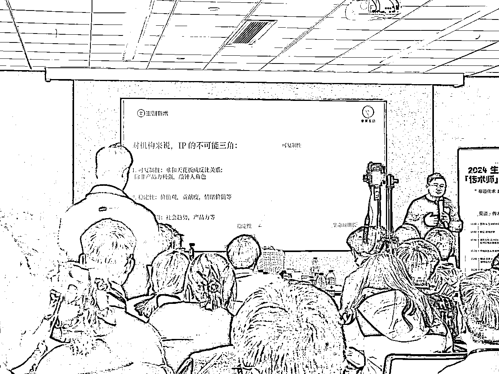

来源：https://a1s0pkr2og.feishu.cn/docx/LuOPdWgI1oSN5kxgB2dciDJgnRg
2024年的12月末，70多位传术师齐聚生财新办公室，参加了“见道，传术，共鸣”——2024年生财传术师首次线下见面会，也是新办公室的首场活动
认识了非常多好朋友，以及勇敢的见了一些前辈，收获颇丰

整个活动主旋律是“越分享越幸运”，今天想聊聊我对“越分享越幸运”的理解，也借此机会分享总结一下我的2024年~
全文7,630字数，阅读时间5-10min
分享是有巨大红利的，分享的可以被看见的，分享可以让我们去和这个世界发生真实的碰撞。
老大说那时候写了自己如何在副业赚钱(在油管做副业)的帖子，加了曹大的圈子当然希望被曹大看见:
我发消息给曹大，“诶，他没理我”
直到分享了一些有价值的内容，被曹大转发到的公众号，自己才能被更多人看见，后来老大和喜欢的大佬关系更加密切了
所以我觉得我就是从分享到受益的一个真实的案例，像是在支援未来的自己
什么拯救了你，你就去用什么拯救别人——我是真的这么觉得的。因为我就是疯狂的去寻找如何赚钱的方法，然后我找到了，所以我把这个方法再分享给大家。所以我就拯救别人，让更多的人因为生财而受益。
这看似是一个利他行为，最后他其实一定在未来的很多角落里在帮助我。所以利他就是利己。他不是一个营销策略，它是一个世界观。
持续做正确的事情，并且不断表达出来的人，更容易遇到贵人，实现跳跃式的成长.
我们普通人每天学习做项目，他是线性的增长，一点一点。每天做一点点，做一分成长一分，做两分成长两分
我曾经平时涨粉就是10-20，但是碰到贵人推荐，我可以一天涨粉了5000，这是500倍的一个增长的。这是我自己的一个真实经历
2019年的时候，我花了一年时间更新一个课程，当时我也邀请了很多的朋友帮我一起发朋友圈去推广一下课程，当然大家也都发了。
当时亦仁就问我，结果符不符合我的预期。
我说不符合，我当时觉得大家这么多人都帮我去推荐了，至少卖2000份，那后来只卖了300份。我就在想，为什么会这样，这完全和我想的不一样，一定是我的一个地方没有做。
我和亦仁说，没关系，我有信心后面通过内容把这个量慢慢带起来。
我当时已经有了要日更的这个想法了，但是并没有很清晰的去做。
后来我就专门去思考这个问题，既然想做日更这件事情，我就给自己讲一句话，现在开始日更未来赚钱会越来越容易，现在不日更以后赚钱会越来越难
我当时找了两个在日更的人，一个是s老师，一个是辉哥
然后我专门花花了三个月时间把他们的公众号带“日更”词条的文章都全部去看了一遍，包括他们的书我都把它看了一遍
然后我对日更这件事情，就更加坚定了，一定要去做
因为在互联网上，我们要把一个东西卖出去，其实取决于两个因素
一是信任；用户觉得我们是一个靠谱的人，是一个认真的人，是一个值得相信的人
二是专业；我们的这个产品是不是真的满足了用户需求，帮他解决了问题
那信任靠什么来建立？
信任就是用户知道你是一个什么样的人，信任一定要靠时间来建立
只有大量的对外输出，我每天在成长，用户也知道我后来也会持续在成长的
每天写完一篇文章，我是让自己在某一方面有一个确定性的成长的
很多人说需要靠写作来变现，其实从来不能变现，能变现的是你自己
所以围绕自己去写，让自己变得更厉害，让自己变得更强
只是写日更会让人觉得麻烦，我怎么每天都在写，每天都写的不好？
那肯定写的不好。
因为一开始你练得少，练得少一定写的不好。至少前100天写够，也就是写过30万字，接受自己之前写的全部都是垃圾
因为都在分享生财内容，在2021年4月18拉新的时候，账上躺着20w
其实如果平均每一篇文章2000字的话，相当于我写了20万字
收入20万，就是一个字一块钱
那如果你们每天写文章，写一个字，挣一块钱，写1000个字，赚一份赚1000块钱，你们会愿意写吗？
肯定会所有人都愿意去写，所以要先相信后看见。
心想事成的前提是，如果你心不想，事就一定不会成
我为什么要相信写作阅读的时候，把我墙上贴了一层，告诉自己一定能够赚到钱
你要对自己有200%的信心，无条件的自信心
如果你不相信，那就没有人会相信
所谓希望，就是一个人相信自己的明天，会因为今天的努力而变得更好
所以希望是一个非常珍贵的东西，我希望大家都能够积极去寻找解决方案，付出努力，一定会越来越好的
媒体的内容其实就是复读机，只是用新的形式改造了
小红书现在很多内容就是从微博、知乎搬运的
b站的内容是从小红书、抖音搬运的
抖音的内容也有小红书、油管搬运的
流量、平台都是有红利的，我们从内容就能看出每个平台处于什么样的时期
而且每个时期，平台的要求也会有差异:
初期:天黑请闭眼--黑灰产、搞笑娱乐、普通批量内容
中期:睁一只眼--半平台半合规
末期:两只眼睁开--极度优质、规模化投流、合规
我们从这样的时期就能分辨出，每个平台大概处于什么样的时期，这个决定了我们的运营动作是什么
流量红利期
共识期:就是大家都知道这玩意赚钱了，都在往里面冲
非共识期:有巨大信息差、信息茧房，谁看到谁就赚钱
非共识期，靠行动力:比谁先看见，海盗逻辑
共识期，靠组织力:比谁看得远，耕耘逻辑
我是大四的时候加入生财的，那个时候真的是什么都不懂，纯小白，也没有接触过任何的商业思维，也没有接触过任何的网络项目，
而今天是我加入生财的一年半的日子，这一年半里我得到了突飞猛进的进步，整个人也发生了脱胎换骨的变化。
因为我坚信越分享越幸运，所以这一年半来。不管是从表达能力，商业思维各方面，我都得到了非常大的提升，
回顾这一年半以来，我的关键节点，都跟越分享越幸运有关系。
我会尽我所能的去写我能够写的帖子，我经历到的、我看到的，把这些干货无私的分享出来给大家
在这篇精华帖里，我超级细致的分享了我的关键节点经历。
【精华帖】02年女大如何通过参加[生财线下聚会]，实现从0到第三个月10万？
https://t.zsxq.com/19xmqFHiF
过了差不多一年了，我再回头看这个帖子的时候，我觉得写的很详细很真实很细节，所以很有感触
每一次的关键节点都是因为我主动分享链接得到的，而亦仁大大在这次活动里面又说，分享其实就是会让你跟这个世界去碰撞，那么就会越来越知道自己的形状是怎么样的。
我很认可这句话，比如在我发了这篇精华帖之后，我就收到了很多圈友的一些鼓励和认可，
印象最深的有一名圈友。他特意来加我跟我说。因为看了我的分享，所以他有勇气去参加线下活动了，他作为加入了生财接近三年的圈友，但是他从来没有去和圈友线下社交过。
我这篇帖子让他破了这个心魔，那么我觉得这篇帖子的就是非常非常有价值的，

这是我第1篇帖子，也是我的第1篇精华帖，让我发现表达是非常有力量的，分享更多的是给到信心和希望，这就是文字透过屏幕后还能穿透的力量。
最重要的是，哪怕我是一个小白，我经历了事情之后也能写出一篇对别人有价值的东西；哪怕我是个大学生，我也能够写出对别人有价值的东西
帮助别人打破心魔的过程，也是帮自己打破心魔的过程，我不再畏手畏脚了。
在这篇精华帖里，我超级细致的分享了我的门店运营经验。
【精华帖】《00后单店探索：实体小白线上运营的八个避坑点》
https://t.zsxq.com/S07Z3
因为梳理这篇帖子，一下子就把我4个月在做同城流量的思考和经验全部连在一起了，
更体系化了，自己脑子里面对这方面这个板块的东西更立体了，把散的拼图合在一起。
所以我觉得写文章，它是既是一种输出，也是对自己的原有的输入的一种整理
同时我也把我的一些运营经验分享给了其他店长，他们直接就可以迁移复制过去拿来用，也是一个利他的过程
在传术师线下活动这一次，我作为小组长发起了同城流量的这个话题的局，也是无意之间链接了一些做实体的老板圈友
其中有一个做线下少儿培训的圈友，刚好他在美团运营上有一些困惑，打算从私域转介绍上，慢慢地扩大到通过美团做公域流量，想要尝试一下这个板块的运营。
我也给他分享了一些经验，告诉他怎么样更好的跟美团的一些内部人员去沟通，相信对他也会有一定的帮助的
2024我做了很多分享的动作，包括但不限于，我会尽所能及的帮助我能够提供帮助的圈友；
2024我尽我所能的去组局当组局官，给大家分享我知道的了解到的干货；
刚开始作为小白先担任线下聚会志愿者，熟悉各个角色的流程；后面去参加线下的聚会，慢慢打开自己；最后再去尝试当组局官，完成组局的0~1，1~10
每一次角色的转变，其实都是对自己的一个新的体验和挑战，
当志愿者的时候，你想的是怎么样高效率的完成一些固定重复的工作？
参加聚会的时候，你想的是怎么样去倾听学习？怎么样去链接人脉？
担任组局官的时候，你想的是怎么样让整个局更活跃，让大家都有收获的回去？
这里面轻飘飘的几句话，实际上背后每一个点要做好，都要付出很大的精力和研究

2024年我组了好多好多局，自己也参加了好多好多局。金牌组局官（自封哈哈），累计组局24场，每场组局满意度平均接近100％
在这个过程中，确实会看到更多的人生样本和生命状态，也会给到我一些冲击和思考。
过程中我可以开开眼界去看看别人都是怎么活的，怎么过的？我以后要怎么活？或者我想怎么活？
这些问题就是在不断的见人中，慢慢找到一些属于自己的答案的
在这些帖子里，我超级细致的分享了我的组局经验。
新人入门局·线下聚会 筹办流程分享 https://t.zsxq.com/t1QLs
新手组局必看：户外运动组局的保姆级复盘指南 https://t.zsxq.com/OVuvk
为什么写这两篇帖子呢？
因为在我组了这么多场局里面，我发起过最多的局，一种就是新人入门级，第2种就是户外运动的局
这里面尤其是新人入门局，对我的冲击是最大的，
因为我看到了好多好多刚进来的一些新圈友，他们就跟一年前的我一样迷茫焦虑，
只要有一些愿意分享的人去说出来，他们的经验就会让他们看到很大的“榜样力量”，或者是那种“先看见后相信”的信念感
接着后面就有了其他的更多的故事，比如说：
和梦吟姐姐和部分圈友，深度参与过组局官手册的共创；
经木木哥的同意组建过广州新手组局官陪伴群，帮助大家完成组局的0-1
我坚持日更，接近300天的公众号文章；
我都尽可能的有空的时候就多参加活动，坚持写复盘，认识一些人了解一些事情，让自己眼界更开一点；
表达红利是属于愿意表达的人，是属于有自己的一个表达出口小小领域的人
所以不管是发朋友圈，写公众号，拍视频口播，都可以，只要是你最低成本最愿意去做的一个形式去表达，然后坚持去做。很多时候表达的过程中就是自我梳理，会帮助自己对事情想得更清晰
对于刚开始做输出表达的新人来说，最大的卡点就是，会对于自己的输出，过度在意别人的眼光和评价，
实际上再幼稚也没有关系，这些就是我们那个时间点当下的思考和见解。如果说在n年后你觉得自己之前那些观点很傻的话，说明你进步了，你应该感到高兴
还有一点就是降低ego，其实关注你的人并没有你想象中那么多，你只要去尽情的做自己就好了
杭州一趟，让我感觉其实真正愿意分享 会分享 懂分享的人并不多，愿意发出声音的人也很少，
大部分人都是那个沉默的倾听者，所以有时候表达红利他是一直持续存在的，
哪怕很多人都知道这个道理，但是并不一定能做到或者能做的比较好
这里面其实包含了自己如何表达自己，你如何倾听别人，你如何提问让别人愿意说出来
越发觉得，这些都是一辈子要修炼的功课
我之前都是搞流量体系的，这个项目到那个项目，但是进来就做到0到1，没有办法1到10。其中我是很难保持这个心力，就一直是向上往前冲的。如何创业者在创业选项目的同时，还能把自己的这个心力不给分散掉太厉害？
这个非常重要，就是所有的心力问题，来源于你有很多问题要你要选择，很多问题要克服。
你如何长期的坚持下去，我认为你要让自己爽，所以我现在就是会更加强化这个点。
其实是跳跃到一个阶段。如果说你还不能让自己爽，那你的心力是难以维护的。
让自己爽是有很多方式的。比如说我是个i人，我是不愿意直播的，那种方式让我不舒服，我直播其实是有一个消耗的过程。所以我不做，公司团队再怎么摁着头我也不做，因为我得让自己爽。
所以你如果让自己想要有可持续的模式，要让自己爽，慢慢的你就会把你的创业当做享受。
如何才能听取正确的建议？
这个问题可能听起来比较虚，我落实两个场景。
第一个场景就是，我们做自己做项目的时候，项目有起有落。当你的项目取得进展突破的时候，狂的没边儿，觉得自己就是这个神，别人怎么听都没事儿。
但是当这个项目遇到一些平台大环境的变化，或者自己团队一些变化，遇到低谷的时候，这个时候又总是感觉会自我贬低，而且是不光贬低自己，还会贬低自己团队的小伙伴。就总觉得外来的团队外来的和尚好念经，就总觉得这边想去请教一下
第二个场景，很多事情常常是无法从历史中去读取教训。比如说经历过微信公众号的时候，当时很早就注册了微信公众号，那个时候还没有分个人号，企业号，但没有去利用。
这个时候可能是没有经验。但是到后来遇到，比如说抖音的时候，比如说现在我在做视频号，遇到视频号的时候，往往又是很难说从过去去吸引，去读取教训。
而且在这个过程中，周边的声音很多很杂，也有拿到结果的，也有可能自己身边信任的。这个时候真的就是很难说谁是对的，谁是错的，有的时候就会容易陷入大还是小的问题
你的问题 就是如何判断建议给的是对还是错
首先你得对一个事情有自己的判断体系，你对于一个事情能够基本判断大概是对的还是错的，
但是外界会有很多声音，不管是正面的还是负面的，我自己的经验就是我会主动去找别人给我反馈，会找身边的朋友。
我和他们交流说，我要做一件事，你觉得我这里面有没有一些问题？然后所有的建议我会收集起来，看看哪个是对我来说最重要的。
在判断什么事情是对我最重要的时候，我会利用极推法
如果说我只要考虑一件事情的话，那我要做的最重要的事情是什么
可能我们正常思考会有四五个维度去考虑问题，但我会把他推到极致，如果说我只做一件事，那么对我来说什么是最重要的？
第2个我会认真的去听取比我厉害的人的建议，所谓的有结果的人，就是简单粗暴的，他赚的钱比我多
如果一个人赚钱比我多，那么我就认为他的结果比我大
如果这个时候他说的点跟我说的不一样，那这个时候就会引起强烈的异常值
也就是说如果一个人跟我说了一个不一样的观点，且他的结果比我大，我的第一反应会是去认真的思考找逻辑，找证据，去想他的观念是怎么形成的
当时我进王川群的时候，他给了我一个反馈说我现在做的社群用户应该再往上走一走，当时我是不认可的，但是这个点我记下来，我会去思考他为什么这么讲，为什么会有这样的观点，然后进行一个梳理
所以如果一个人他的结果很大，那你一定要重视
总而言之，还是要自己在这个过程中不断的决策，不断的复盘，然后慢慢的形成自己的判断体系。
慢慢的你就会对自己的决策有更大的信心。
但是不管我们怎么样去思考和决策都是没有一个完美的解决方案的，所以我们要给自己设置一个ddl，要在这个时间点过去之后不管什么决策，你觉得ok就冲过去看反馈，在行动中得到反馈再去调整。
创业是非连续的，是由几个关键选择决定，分辨信号还是噪音要消除恐惧，建立自己的底层自信
聪明人最大的问题是:选择太多+不肯低头
我们不能仅仅只有“聪明”，而且要有“智慧“
当选择太多的时候，我们要分清这是噪音还是机会信号，是靠平时沉淀和积累获得的
当自己拥有一些财富时，觉得自己天下无敌，听不进别人的建议而“不肯低头”
可以尝试以下方法：
1、找到圈子，远离差的噪音，找到好的信号(比如生财，都是搞钱的信息，至少对搞钱、项目、市场玩法有一些共识)
2、参加线下活动，保持包容和开放，了解和分享最新的思考和玩法，在线下碰撞
3、为什么圈子很重要，因为圈子已经用钱去筛选了这些人群
4、有自己思考的系统:就像电脑程序有自己的运行规则一样
你为什么找生财颜值担当坤汀作为合伙人，除了颜值之外的其他因素？
我15年第一次创业，其实是我们六个合伙人平均分了股份。所以这就决定了这个公司没有一个话语权非常绝对的人，没有一个能够拍板的人。
哪怕我们名义上是有Ceo coo，但是在实际上我们的权力是平均的。
所以面临问题的时候，决策就会出问题。因为大家心里面并不认，比如说我当时是coo，但是呢，我自己可能也觉得有点不好意思，哪怕我觉得我做的业务其实是对的。所以在那种情况下，组织就容易内耗，就走不下去了。
但是现在我跟坤汀是有明确合作的，也就是关键时刻，假如我坚持往左或者说这个是我来看看，那我们就会有一个一致性，就不会产生太大的分歧，因为我和坤汀都是明确规则的，
所谓规则就是我们可以充分讨论，比如说我负责的事情，我确定了要往北走，那我们就一起往北走。你承担你享受，如果说最后成功了，那么你享受这个成功，如果最后失败了，你就承担这个责任。
所以这个东西明确之后，就不会再产生我第1次创业的时候遇到的那个问题。本质上是权责利是不是完全一致，在关键时刻有没有一个下判断的人
所以说如果说我们在创业，我们要想清楚的第1个问题，就是你身边合伙人认不认同你。
这个东西是通过股权去体现出来的，你在股权上看就是绝对的核心？
第2个，如果说你不是核心的，你心里面就要认可大哥，大哥说往哪个方向走就往哪个方向走，这个是核心的经验。
ip的本质
ip=共+识+资产(三要素)
流量+差异化定位+产品
只有共=白牌，娱乐搞笑账号(涨粉快、点赞多)
只有共识无资产=网红账号、小杨哥(有流量，没有自己的坚实产品)
共识资产=雷军vs周鸿祎(雷军有自己的汽车产品、周鸿祎是作为投资产品的人，大家对他们的态度是不同的)

不同时期的IP模型
0.1个IP模型
在流量早期，属于暴力方法，只要有人、拉时长就能赚钱
流量无差异化、无产品、找个素人就可以24h直播转化，没IP一说
这是流量、平台、产品的红利期
0.3个IP模型
有流量、微差异化、无产品(短视频直播分离)
换人物，老奶奶去拍视频，内容是:家庭教育、孩子考试学习之类
之前都是在给大教育公司做导流，流量公司
0.5个IP模型
有流量、微差异化、微产品
签约有流量的老师，直播转化，后端自己有产品
让流量和产品都能在自己手里
对机构来说，IP的不可能三角
·可复制性:除非产品力极强，否则很快被人替代
·稳定性:公司需要给IP产品、公司价值观、给到足够的情绪价值
·生命周期:社会趋势、产品力都会随着时间推移改变，下一个火的还不确定是谁

上面几点都是不可持续的，这也是mcn和IP之间较难调和的事情
因为IP会觉得自己作用很大，但是赚不到相应的那么多钱，他会离开
感恩生财提供这么好的学习平台，and七天姐对这次活动的超用心策划！
希望在接下来的2025年，能成为自己想成为的IP，布道传术，成人达已，成为小灯塔，用经验照亮更多圈友！
也希望更多圈友实现自己2025年的“越分享越幸运”~